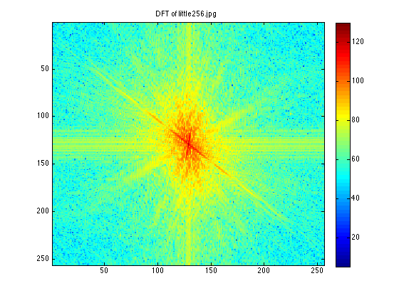
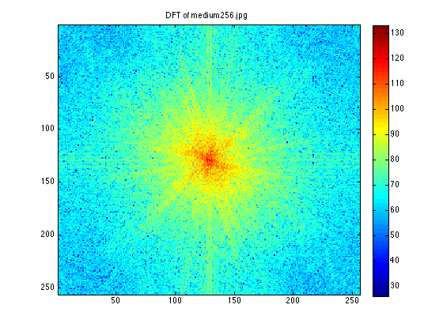
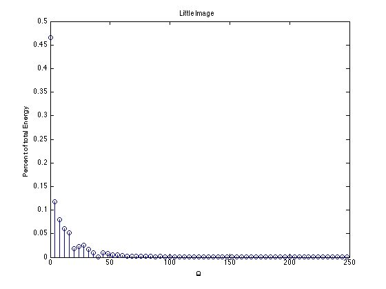
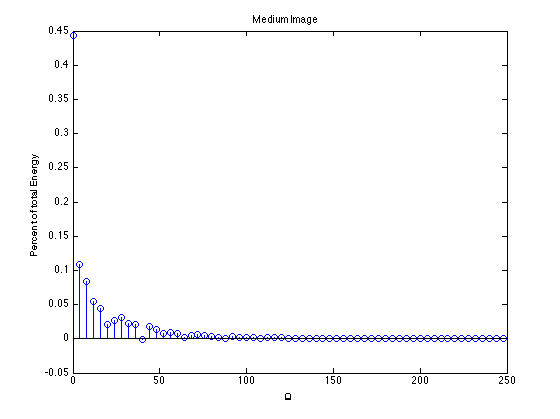

Homework 3
Digital Image Processing Ashutosh Priyadarshy Spring 2011
Images: little256.jpg medium256.jpg
Description:
1. Use a series of LPF Masks that increase in radius in spatial-frequency domain.
2. For each LPF find the energy it encompasses.
3. Take the difference of successive LPF to find the energy at "all" radial frequencies
4. Use a bandpass range that encompasses the "interesting" part of the spectrum -- based on what the plot looks like of the energy vs radial frequency.
5. Compute the energy in this bandpass range and call it granularity.
clear all; close all; % Read in the two files of interest. lit = imread('little256.jpg'); med = imread('medium256.jpg'); % Some Image Constants N = 256; % Use only the green channels. lit = lit(:, :, 2); med = med(:, :, 2); % Compute the 2-D DFTs. LIT = fftshift(fft2(lit)); MED = fftshift(fft2(med)); % Perform log_10 compression -- for display only. LIT_db = 20*log10(abs(LIT) + 1); MED_db = 20*log10(abs(MED) + 1); % Display the Two Dimensional DFTs figure(1) imagesc(LIT_db), colormap('jet'), colorbar, title('DFT of little256.jpg'); figure(2) imagesc(MED_db), colormap('jet'), colorbar, title('DFT of medium256.jpg'); % Reduce awkwardness and make these odd length x odd length images. % This won't really matter until the last iteration, so we only "corrupt" % one calculation, and with the image being significantly lowpass it should % be fine... LIT = LIT(1:255, 1:255); MED = MED(1:255, 1:255); index = 0; % Create successively larger LOWPASS masks and find the energy by summing % DFT coefficients that fall in that mask. for u = 1:2:N/2 index = index + 1; % Create a circular mask. mask = getnhood(strel('disk', u, 8)); % Turn it into a logical array so we can pointwise multiply. mask = (padarray(mask, [(255-size(mask,1))/2 (255-size(mask,2))/2])); % Multiply the shifted DFT matrix (NOT log compressed) by the mask. LIT_relevant_coefficients = mask .* LIT; MED_relevant_coefficients = mask .* MED; % Sum up all the DFT coefficients that fell in the mask and append them % to a vector of energy versus 'u' the cutoff frequency. LIT_granarray(index) = sum(sum(abs(LIT_relevant_coefficients).^2)); MED_granarray(index) = sum(sum(abs(MED_relevant_coefficients).^2)); end % Plot energy versus radial frequency. LIT_perc = diff(LIT_granarray); figure(3); stem(0:4:251, diff(LIT_granarray)./LIT_granarray(end)); title(' Little Image '); xlabel(' \Omega '); ylabel(' Percent of total Energy '); MED_perc = diff(MED_granarray); figure(4); stem(0:4:251, diff(MED_granarray)./MED_granarray(end)); title(' Medium Image '); xlabel(' \Omega '); ylabel(' Percent of total Energy '); % Based on the above graphs use a bandpass mask from u = ~ 4.2426 to ~ 109 % cycles/image. granularity_little = sum(LIT_perc(2:38)) granularity_medium = sum(MED_perc(2:38)) % Divide by the total image of the respective image to get an idea of the % value. granularity_little_normalized = granularity_little./LIT_granarray(end) granularity_medium_normalized = granularity_medium./MED_granarray(end)
granularity_little =
1.4096e+13
granularity_medium =
2.8298e+13
granularity_little_normalized =
0.4577
granularity_medium_normalized =
0.5149
   